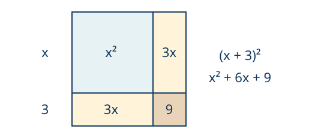
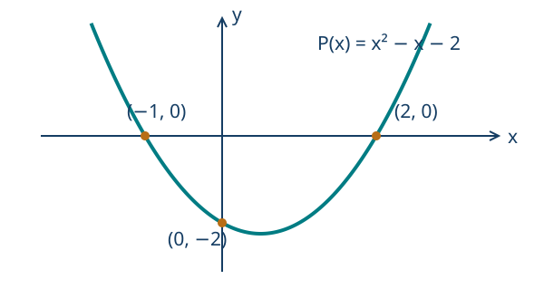

Ecuaciones cuadráticas y polinomios elementales
← Sistemas de ecuaciones y relaciones lineales · Índice del libro · Siguiente →
Volvamos al problema de reconstruir un rectángulo, esta vez con dos datos: conocemos su área y sabemos cuánto supera el largo al ancho. Elegir el ancho fija el largo, de modo que la condición del área se convierte en un producto de dos expresiones que contienen la misma incógnita. Al desarrollar ese producto aparece un cuadrado. Las operaciones usadas para una ecuación lineal necesitarán una herramienta adicional que permita recuperar los valores escondidos en él.
La factorización será una primera manera de encontrarlos: convertir una expresión en un producto permite aprovechar lo que sabemos de los factores cuando ese producto vale cero. Habrá ecuaciones cuya factorización resulte difícil de reconocer, y completar un cuadrado ofrecerá otro camino, del que obtendremos una fórmula general. En todos los casos regresaremos a las condiciones originales, porque una raíz algebraica puede quedar fuera de las longitudes admisibles del rectángulo. El número de soluciones también será parte de lo que debemos justificar.
Una longitud que aparece multiplicada por otra
Problema 1. Reconstruir un rectángulo desde su área
Enunciado. Un rectángulo tiene área de 84 metros cuadrados y su largo supera al ancho en cinco metros. Encuentra sus dimensiones.
Solución. Sea \(x>0\) el ancho medido en metros. El largo es \(x+5\) y el área exige \(x(x+5)=84\). Al desarrollar y llevar todo a un miembro obtenemos \(x^2+5x-84=0\). Buscamos dos números cuyo producto sea \(-84\) y cuya suma sea 5: son 12 y \(-7\). Por ello, \[x^2+5x-84=(x+12)(x-7).\] Un producto de reales es cero exactamente cuando alguno de sus factores es cero. Así, \(x=-12\) o \(x=7\). La primera posibilidad queda fuera del dominio de longitudes. El ancho es de siete metros y el largo, de doce. Se comprueban la diferencia \(12-7=5\) y el área \(7\cdot12=84\). La factorización describe todas las soluciones de la ecuación; la restricción geométrica selecciona la admisible.
Una ecuación cuadrática tiene la forma \(ax^2+bx+c=0\), donde los coeficientes son reales y \(a\ne0\). El exponente máximo de la incógnita es 2. La condición sobre \(a\) importa: si se anula, desaparece el término cuadrático y debemos volver a una ecuación lineal o constante. A lo largo del capítulo resolveremos primero en los reales; al final estudiaremos una ampliación opcional del sistema numérico.
Problema 2. La raíz que una división puede borrar
Enunciado. Resuelve \(x^2=5x\) y revisa el procedimiento de dividir directamente por \(x\).
Solución. Restamos \(5x\) y extraemos factor común: \(x^2-5x=x(x-5)=0\). El producto nulo da \(x=0\) o \(x=5\). Ambos verifican la ecuación inicial. Dividir por \(x\) solo es lícito bajo la hipótesis \(x\ne0\) y encontraría únicamente la raíz 5. El caso \(x=0\) debe examinarse aparte. Factorizar permite mantener juntas las dos posibilidades sin efectuar esa división.
Problema 3. Factores con coeficientes distintos de uno
Enunciado. Resuelve \(2x^2-x-3=0\).
Solución. Reconocemos \(2x^2-x-3=(2x-3)(x+1)\), pues al multiplicar obtenemos \(2x^2+2x-3x-3\). La ecuación equivale a \(2x-3=0\) o \(x+1=0\). Sus raíces son \(3/2\) y \(-1\). Sustituir \(3/2\) da \(9/2-3/2-3=0\); sustituir \(-1\) da \(2+1-3=0\). La equivalencia con un producto nulo justifica que no hay más soluciones reales.
Problema 4. Recuperar las dos ramas de un cuadrado
Enunciado. Resuelve \(x^2=12\) en los reales.
Solución. La raíz principal \(\sqrt{12}=2\sqrt3\) es positiva. Un número y su opuesto tienen el mismo cuadrado, por lo que aparecen \(x=2\sqrt3\) y \(x=-2\sqrt3\). Para justificar que son todos, escribimos \(x^2-12=(x-2\sqrt3)(x+2\sqrt3)\). El producto nulo da exactamente esas dos ramas. La igualdad \(x=\sqrt{12}\) habría conservado solo la positiva. Ambas raíces verifican \(x^2=4\cdot3=12\).
Propiedades para resolver mediante factores
| Propiedad | Fórmula y condiciones de uso |
|---|---|
| Producto nulo | Para reales \(u,v\), \(uv=0\) equivale a \(u=0\) o \(v=0\). Se aplica sucesivamente a un producto finito. |
| Factores y raíces | Si \(P(x)=A(x)B(x)\) es una identidad, sus ceros son los valores que anulan al menos un factor, dentro del dominio original. |
| Ecuación de un cuadrado | Si \(r>0\), \(u^2=r\) equivale a \(u=\sqrt r\) o \(u=-\sqrt r\). Si \(r=0\), solo \(u=0\); si \(r<0\), no hay solución real. |
| Condición del contexto | Las raíces admisibles son las raíces algebraicas que pertenecen al dominio del problema. |
Pruebas. Véase «Factorización y ecuaciones de un cuadrado» en el apéndice.
Convertir una expresión en un cuadrado
La factorización con enteros resulta cómoda cuando los factores se reconocen. Podemos construir otro camino que funcione aunque no los veamos. En \(x^2+6x\) falta el término 9 para obtener \((x+3)^2\). Ese 9 se decide por el término central del cuadrado: \(2\cdot3x=6x\). Añadirlo exige compensarlo para conservar la expresión.
Problema 5. Completar y compensar
Enunciado. Resuelve \(x^2+6x+5=0\) completando un cuadrado.
Solución. Escribimos \(x^2+6x+5=(x+3)^2-9+5=(x+3)^2-4\). La ecuación equivale a \((x+3)^2=4\). Por tanto, \(x+3=2\) o \(x+3=-2\), y obtenemos \(x=-1\) o \(x=-5\). Al sustituir, \(1-6+5=0\) y \(25-30+5=0\). Cada paso conserva las soluciones y las dos ramas del cuadrado se han considerado.
Para longitudes positivas, un dibujo puede mostrar por qué aparece la corrección 9: al cuadrado de lado \(x\) se añaden dos bandas de ancho 3; falta un cuadrado pequeño de lado 3 para completar el cuadrado de lado \(x+3\). La identidad algebraica sigue siendo válida para todo real \(x\), aunque ese dibujo de longitudes deje de representar sus signos.

Problema 6. Un coeficiente principal negativo
Enunciado. Resuelve \(-2x^2+8x-3=0\) completando cuadrados.
Solución. Extraemos \(-2\) de los términos que contienen \(x\): \[-2(x^2-4x)-3=-2\bigl((x-2)^2-4\bigr)-3=-2(x-2)^2+5.\] La condición se transforma en \((x-2)^2=5/2\). Obtenemos \(x=2\pm\sqrt{5/2}=2\pm\sqrt{10}/2\). La notación \(\pm\) reúne dos valores, uno con cada signo. Para comprobarlos llamamos \(s=\sqrt{10}/2\), de modo que \(s^2=5/2\). En ambos casos la expresión original, escrita como \(5-2(x-2)^2\), vale \(5-2s^2=0\). El coeficiente negativo no cambia el significado de una igualdad, pues solo dividimos por un número no nulo.
Una fórmula que conserva la razón de sus pasos
Tomemos \(ax^2+bx+c=0\) con \(a\ne0\). Para reconocer un cuadrado queremos que los términos que contienen \(x\) se parezcan a los de \((2ax+b)^2\): al desarrollar aparecen \(4a^2x^2+4abx+b^2\). Multiplicar la ecuación por \(4a\) produce los dos primeros; después podemos completar el cuadrado añadiendo \(b^2\) a ambos miembros y trasladando \(4ac\). Así obtenemos \[4a^2x^2+4abx+4ac=0 \quad\Longleftrightarrow\quad (2ax+b)^2=b^2-4ac.\] Llamamos discriminante al número \(\Delta=b^2-4ac\), porque su signo decide qué posibilidades tiene el cuadrado. Cuando \(\Delta\ge0\), tomamos las dos raíces con signo y despejamos: \[x=\frac{-b\pm\sqrt\Delta}{2a}.\] Para \(\Delta>0\) obtenemos dos valores distintos; con \(\Delta=0\) ambas ramas coinciden. Si \(\Delta<0\), la igualdad exige que un cuadrado real sea negativo y por tanto carece de solución real. La multiplicación inicial fue por un número no nulo y los despejes conservan ambos sentidos, de modo que las raíces obtenidas forman el conjunto completo.
Problema 7. Raíces que no son racionales
Enunciado. Resuelve \(3x^2-2x-2=0\).
Solución. Tenemos \(a=3\), \(b=-2\), \(c=-2\). Por ello, \(\Delta=(-2)^2-4\cdot3\cdot(-2)=28>0\). La fórmula da \(x=(2\pm\sqrt{28})/6=(1\pm\sqrt7)/3\). Para comprobar sin redondear, la ecuación equivale a \((3x-1)^2=7\). Cada valor encontrado produce \(3x-1=\pm\sqrt7\) y satisface esa igualdad. El conjunto solución tiene exactamente esos dos números.
Problema 8. Dos signos que entregan el mismo valor
Enunciado. Resuelve \(4x^2+12x+9=0\) y explica cuántas raíces distintas tiene.
Solución. La expresión es \((2x+3)^2\). Se anula únicamente cuando \(2x+3=0\), es decir, \(x=-3/2\). El discriminante confirma \(12^2-4\cdot4\cdot9=0\). La fórmula con los dos signos entrega el mismo valor. Hay una raíz distinta, llamada raíz doble porque el factor lineal aparece dos veces: \((2x+3)^2=4(x+3/2)^2\). La multiplicidad registra cuántas veces aparece el factor asociado a una raíz.
Problema 9. Una ecuación sin raíces reales
Enunciado. Resuelve \(x^2-4x+6=0\) en \(\mathbb R\).
Solución. Completamos: \(x^2-4x+6=(x-2)^2+2\). Para todo real \(x\) esta cantidad es al menos 2 y, por tanto, nunca vale cero. El conjunto solución real es vacío. El discriminante es \(16-24=-8\), que expresa la misma imposibilidad. La frase «no hay solución» debe acompañarse del dominio: más adelante veremos cómo cambia esta pregunta al ampliar los números.
Ceros del polinomio y puntos sobre el eje horizontal
Escribir \(P(x)=x^2-x-2\) asigna a cada real una ordenada. Un cero de \(P\) es un valor \(r\) para el cual \(P(r)=0\). En el plano corresponde al punto \((r,0)\). El corte con el eje vertical se obtiene, en cambio, poniendo \(x=0\): es \((0,P(0))\). Distinguir la abscisa de una raíz de la ordenada en el origen evita confundir dos preguntas diferentes.
Problema 10. Dos ceros y una ordenada inicial
Enunciado. Encuentra los ceros de \(P(x)=x^2-x-2\) y sus cortes con ambos ejes.
Solución. Factorizamos \(P(x)=(x-2)(x+1)\). Sus ceros son \(x=2\) y \(x=-1\), de modo que corta el eje horizontal en \((2,0)\) y \((-1,0)\). Para el eje vertical calculamos \(P(0)=-2\): el corte es \((0,-2)\), que no es una raíz. El gráfico muestra esos tres puntos; sus coordenadas se obtuvieron exactamente mediante sustitución y factorización.

Problema 11. Lo que los coeficientes dicen de las raíces
Enunciado. Para \(2x^2-7x+3=0\), encuentra la suma y el producto de las raíces sin calcularlas primero. Después determínalas y comprueba esas relaciones.
Solución. Si las raíces son \(r,s\), la factorización \(2(x-r)(x-s)\) se desarrolla como \(2x^2-2(r+s)x+2rs\). Comparar coeficientes da \(r+s=7/2\) y \(rs=3/2\). Para encontrarlas reconocemos \((2x-1)(x-3)=0\), de donde \(r=1/2\) y \(s=3\). Su suma es \(7/2\) y su producto, \(3/2\). Las relaciones de suma y producto sirven como control, pero deben cumplirse juntas: conocer solo una no determina ambas raíces.
Propiedades de una ecuación cuadrática
| Propiedad | Fórmula y condiciones de uso |
|---|---|
| Cuadrado completo | Para \(a\ne0\), \(ax^2+bx+c=a(x+b/(2a))^2-\Delta/(4a)\), con \(\Delta=b^2-4ac\). |
| Fórmula de las raíces reales | Si \(a\ne0\) y \(\Delta\ge0\), las raíces son \((-b+\sqrt\Delta)/(2a)\) y \((-b-\sqrt\Delta)/(2a)\). |
| Discriminante positivo | Si \(a\ne0\) y \(\Delta>0\), hay dos raíces reales distintas. |
| Discriminante cero | Si \(a\ne0\) y \(\Delta=0\), hay una raíz real doble: \(-b/(2a)\). |
| Discriminante negativo | Si \(a\ne0\) y \(\Delta<0\), no hay raíces reales. |
| Suma y producto | Para \(a\ne0\), si \(r,s\) son las raíces reales, contadas con multiplicidad, \(r+s=-b/a\) y \(rs=c/a\); además \(ax^2+bx+c=a(x-r)(x-s)\). |
| Cambio de grado | Si \(a=0\), se resuelve \(bx+c=0\): raíz única \(-c/b\) cuando \(b\ne0\); todos los reales si \(b=c=0\); ninguno si \(b=0\), \(c\ne0\). |
Pruebas. Véanse «Fórmula cuadrática y relaciones entre raíces» y «Parámetros y cambios de grado» en el apéndice.
Problema 12. La misma altura en dos instantes
Enunciado. Se adopta el modelo \(h(t)=-5t^2+20t+1\) para una altura en metros, con el tiempo \(t\ge0\) medido en segundos. ¿Cuándo se alcanza una altura de 16 metros?
Solución. Imponemos \(h(t)=16\): \(-5t^2+20t-15=0\). Dividir por \(-5\) da \(t^2-4t+3=0\), que se factoriza como \((t-1)(t-3)=0\). Los candidatos son 1 y 3 segundos, ambos admisibles. Comprobamos \(h(1)=-5+20+1=16\) y \(h(3)=-45+60+1=16\). El modelo alcanza su altura máxima de 21 metros en \(t=2\), pues \(h(t)=21-5(t-2)^2\). Por ello, los dos instantes encontrados corresponden al ascenso y al descenso. La interpretación usa el modelo adoptado, cuya validez física debe verificarse por otros medios.
Los polinomios conservan una estructura finita
Un polinomio real en \(x\) es una suma finita \(a_nx^n+\cdots+a_1x+a_0\), con exponentes enteros no negativos y coeficientes reales. Si \(a_n\ne0\), su grado es \(n\). Ordenar los términos por potencias permite localizar ese coeficiente principal y reconocer qué grado queda después de reunir términos semejantes. El polinomio cero tiene todos sus coeficientes nulos; mantendremos para él la convención de dejar su grado ordinario sin asignar.
Problema 13. Leer los coeficientes y evaluar
Enunciado. Para \(P(x)=2x^3-3x^2+5\), indica el grado y el coeficiente de \(x\). Calcula \(P(2)\) y decide si \(-1\) es un cero.
Solución. El grado es 3 porque el coeficiente de \(x^3\) es 2. El término en \(x\) no está escrito: su coeficiente es cero. Evaluamos \(P(2)=2\cdot8-3\cdot4+5=9\). Para \(x=-1\) obtenemos \(-2-3+5=0\), de modo que \(-1\) es un cero. Escribir \(2x^3-3x^2+0x+5\) resulta útil al dividir, porque conserva visibles los lugares de todos los coeficientes.
Dividir un polinomio y conservar el resto
La división de números enteros distingue cociente y resto. Para polinomios buscamos una identidad \(P=DQ+R\), donde el divisor \(D\) no sea el polinomio cero y el resto tenga grado menor que el divisor, o sea cero. La identidad es válida para todo \(x\). La fracción \(P(x)/D(x)\) solo existe donde \(D(x)\ne0\); esa restricción sigue siendo necesaria aunque conozcamos el cociente.
Problema 14. Cancelar el término de mayor grado
Enunciado. Divide \(2x^3-3x^2+5\) por \(x+1\) y encuentra todos sus ceros reales.
Solución. Para cancelar \(2x^3\) necesitamos \(2x^2\) en el cociente. Restamos \((x+1)2x^2=2x^3+2x^2\) y queda \(-5x^2+0x+5\). Para cancelar \(-5x^2\) agregamos \(-5x\) al cociente. Restar \((x+1)(-5x)=-5x^2-5x\) deja \(5x+5\). Finalmente agregamos 5 y el resto es cero. Hemos obtenido \[2x^3-3x^2+5=(x+1)(2x^2-5x+5).\] Multiplicar confirma la identidad, incluido el coeficiente cero de \(x\). El segundo factor tiene discriminante \(25-40=-15\) y no se anula en los reales. Por el producto nulo, el único cero real es \(-1\). La división encontró un factor; la cuadrática restante permitió demostrar que no faltaban ceros reales.
Problema 15. El resto se puede conocer sin dividir
Enunciado. Encuentra el resto de dividir \(P(x)=x^3-4x+1\) por \(x-2\) y verifica una identidad de división.
Solución. Al dividir por un polinomio de grado 1, el resto es una constante \(r\). Si \(P(x)=(x-2)Q(x)+r\), sustituir \(x=2\) produce \(P(2)=r\). Calculamos \(8-8+1=1\). En este caso el cociente es \(x^2+2x\), y la comprobación completa es \[x^3-4x+1=(x-2)(x^2+2x)+1.\] El resto es 1. Por tanto, 2 no es un cero y \(x-2\) no es un factor de \(P\).
Problema 16. Elegir un coeficiente para obtener un factor
Enunciado. Determina \(k\) para que \(P(x)=x^3-3x^2+k\) sea divisible por \(x-1\).
Solución. La divisibilidad exige resto cero. Ese resto es \(P(1)=1-3+k=k-2\), así que necesariamente \(k=2\). Con ese valor, \[x^3-3x^2+2=(x-1)(x^2-2x-2).\] Multiplicar da \(x^3-3x^2+0x+2\), lo que confirma también la suficiencia: el valor encontrado produce efectivamente el factor pedido. La condición sobre \(k\) no se dedujo de una división por \(x-1\) en un punto prohibido; se usó una identidad polinómica válida incluso en \(x=1\).
Reconocer factores en grados superiores
La propiedad del producto nulo sigue siendo útil cuando aumenta el grado: si conseguimos escribir un polinomio como producto de factores conocidos, sus ceros se buscan en cada uno de ellos. La dificultad se traslada entonces a reconocer la factorización. En los ejemplos siguientes ensayaremos agrupaciones y sustituciones que hacen aparecer expresiones ya estudiadas; después justificaremos que los factores considerados abarcan todos los ceros. El conjunto de procedimientos se aplica a las estructuras que podamos reconocer en cada expresión.
Problema 17. Agrupar para encontrar tres factores
Enunciado. Resuelve \(x^3-4x^2-x+4=0\).
Solución. Agrupamos \(x^2(x-4)-(x-4)=(x-4)(x^2-1)\). La diferencia de cuadrados entrega \((x-4)(x-1)(x+1)=0\). Las soluciones son 4, 1 y \(-1\). Cada una anula un factor; recíprocamente, un producto de tres reales solo puede anularse si alguno de ellos es cero. Por eso la lista es completa. Al multiplicar los factores recuperamos exactamente el polinomio inicial.
Problema 18. Una cuadrática escondida en las potencias pares
Enunciado. Resuelve \(x^4-5x^2+4=0\) en los reales.
Solución. Introducimos \(u=x^2\), por lo que \(u\ge0\). La condición se convierte en \(u^2-5u+4=(u-1)(u-4)=0\). Ambos valores, \(u=1\) y \(u=4\), son admisibles. Regresamos a \(x\): de \(x^2=1\) salen \(x=\pm1\); de \(x^2=4\), \(x=\pm2\). Las cuatro raíces verifican la ecuación original y agotan las posibilidades de \(u\). La sustitución abrevia la escritura, pero todavía exige recuperar cada valor posible de \(x\).
Problema 19. Dos raíces distintas, cinco factores
Enunciado. Encuentra las raíces de \((x-2)^2(x+1)^3=0\) e indica sus multiplicidades.
Solución. La raíz 2 aparece en el factor \((x-2)^2\) y tiene multiplicidad 2, porque el otro factor vale \(3^3\ne0\) en ese punto. La raíz \(-1\) tiene multiplicidad 3, porque \((x-2)^2\) vale 9 allí. Hay dos raíces distintas. Las multiplicidades suman 5, que es el grado del producto, pero esa suma no convierte la lista en cinco valores diferentes.
Problema 20. Una ecuación racional no recupera los puntos excluidos
Enunciado. Resuelve \((x^2-9)/(x-3)=0\).
Solución. El dominio exige \(x\ne3\). En él, el cociente se anula exactamente cuando \(x^2-9=0\). Sus candidatos son 3 y \(-3\), pero solo el segundo pertenece al dominio. La solución es \(x=-3\): el numerador vale cero y el denominador vale \(-6\). Cancelar el factor \(x-3\) también conduce a \(x+3=0\) dentro del dominio original. La identidad de factorización no elimina la exclusión que ya tenía la fracción.
Propiedades de los polinomios que hemos utilizado
| Propiedad | Fórmula y condiciones de uso |
|---|---|
| Grado de un producto | Para polinomios no nulos \(A,B\), \(\deg(AB)=\deg A+\deg B\). |
| División con resto | Si \(D\) no es el polinomio cero, existen únicos \(Q,R\) con \(P=DQ+R\) y \(R=0\) o \(\deg R<\deg D\). Los coeficientes son reales. |
| Resto de un divisor lineal | El resto al dividir \(P(x)\) por \(x-r\) es \(P(r)\). |
| Teorema del factor | \(P(r)=0\) equivale a que exista un polinomio \(Q\) con \(P(x)=(x-r)Q(x)\). |
| Cantidad de ceros | Un polinomio no nulo de grado \(n\) tiene a lo sumo \(n\) ceros reales distintos. El polinomio cero queda excluido. |
| Multiplicidad | Una raíz \(r\) tiene multiplicidad \(m\) si \(P(x)=(x-r)^mQ(x)\), con \(m\ge1\) entero y \(Q(r)\ne0\). |
| Sustitución por un cuadrado | Para resolver \(A(x^2)=0\) en los reales, se resuelve \(A(u)=0\) con \(u\ge0\) y después cada ecuación \(x^2=u\). |
Pruebas. Véanse «División de polinomios, restos y multiplicidad» y «Factorización y ecuaciones de un cuadrado» en el apéndice.
El grado también puede depender de un parámetro
El discriminante clasifica una cuadrática cuando su coeficiente principal es no nulo. Si ese coeficiente depende de un parámetro, su anulación debe estudiarse antes de aplicar la fórmula. Los casos restantes pueden clasificarse por el signo del discriminante.
Problema 21. La cuadrática se vuelve lineal
Enunciado. Clasifica y resuelve \(kx^2-2x+1=0\) para todo \(k\in\mathbb R\).
Solución. Para \(k=0\) queda \(-2x+1=0\), cuya raíz es \(1/2\). Si \(k\ne0\), el discriminante es \(4-4k=4(1-k)\). Cuando \(k<1\), con \(k\ne0\), hay dos raíces distintas: \[x=\frac{1+\sqrt{1-k}}{k},\qquad x=\frac{1-\sqrt{1-k}}{k}.\] Para \(k=1\) la ecuación es \((x-1)^2=0\) y hay una raíz doble, 1. Para \(k>1\) no hay raíces reales. Estas ramas cubren todos los parámetros y la fórmula con denominador \(k\) nunca se utiliza en \(k=0\). En la rama regular la comprobación puede hacerse mediante la igualdad equivalente \((kx-1)^2=1-k\).
Problema 22. Raíces que cambian de signo y de cantidad
Enunciado. Clasifica las raíces reales de \(x^2-2kx+1=0\) y determina sus signos cuando son distintas.
Solución. El coeficiente principal es siempre 1. El discriminante vale \(4(k^2-1)\). Si \(k>1\) o \(k<-1\), hay dos raíces distintas, \(k\pm\sqrt{k^2-1}\). Su producto es 1, así que tienen el mismo signo; su suma es \(2k\), por lo que ambas son positivas cuando \(k>1\) y negativas cuando \(k<-1\). Si \(k=1\), hay una raíz doble igual a 1; si \(k=-1\), una raíz doble igual a \(-1\). Para \(-1<k<1\) no hay raíces reales. El estudio separa la existencia de las raíces de la información adicional sobre su signo.
Ampliación opcional: números que representan pares
La ecuación \(x^2+1=0\) no tiene raíz real porque un cuadrado real nunca es negativo. Podemos preguntar qué estructura numérica permitiría resolverla sin alterar las operaciones sobre los reales. Un número complejo es un par de reales \((a,b)\), escrito \(a+bi\). La letra \(i\) representa el par \((0,1)\); los reales se identifican con los pares \((a,0)\).
Definimos la suma y el producto por \[ (a+bi)+(c+di)=(a+c)+(b+d)i,\] \[ (a+bi)(c+di)=(ac-bd)+(ad+bc)i.\] Con estas reglas \(i^2=-1\). Las leyes de cuerpo se conservan, como se comprueba con la aritmética de las coordenadas; el apéndice desarrolla esa comprobación y la existencia de inversos. La igualdad de complejos exige igualdad de sus dos coordenadas. El sistema ampliado no admite un orden de cuerpo compatible con el de los reales: tal orden exigiría que el cuadrado de \(i\), un número no nulo, fuese positivo, aunque ese cuadrado es \(-1\).
Problema 23. Operar en la ampliación y resolver la primera ecuación
Enunciado. Sean \(z=1+i\) y \(w=2-i\). Calcula \(z+w\) y \(zw\). Resuelve también \(x^2+1=0\) en los complejos.
Solución. Sumamos las coordenadas: \(z+w=3+0i=3\). Al multiplicar, \((1+i)(2-i)=2-i+2i-i^2=3+i\). Para la ecuación, \(i\) y \(-i\) tienen cuadrado \(-1\) y ambos sirven. La identidad \(x^2+1=(x-i)(x+i)\) y la ausencia de divisores de cero en este cuerpo demuestran que son todas las raíces complejas. En los reales el conjunto solución sigue siendo vacío; hemos cambiado el dominio de la pregunta.
Problema 24. La misma forma de completar el cuadrado
Enunciado. Resuelve \(x^2-2x+5=0\) en los reales y en los complejos.
Solución. La ecuación equivale a \((x-1)^2=-4\). No hay solución real. En los complejos, \((2i)^2=-4\) y la diferencia de cuadrados da \((x-1-2i)(x-1+2i)=0\). Por el producto nulo obtenemos \(x=1+2i\) o \(x=1-2i\). Para comprobar, cada uno hace que \((x-1)^2+4\) valga \(-4+4=0\). Son dos raíces complejas distintas; ninguna es real porque su segunda coordenada es no nula.
Reglas de la ampliación compleja
| Propiedad | Fórmula y condiciones de uso |
|---|---|
| Igualdad de pares | \(a+bi=c+di\) equivale a \(a=c\) y \(b=d\), con las cuatro coordenadas reales. |
| Suma | \((a+bi)+(c+di)=(a+c)+(b+d)i\). |
| Producto | \((a+bi)(c+di)=(ac-bd)+(ad+bc)i\); en particular, \(i^2=-1\). |
| Inverso no nulo | Si \((a,b)\ne(0,0)\), \((a+bi)^{-1}=(a-bi)/(a^2+b^2)\). |
| Producto nulo complejo | Para complejos \(z,w\), \(zw=0\) equivale a \(z=0\) o \(w=0\). |
| Ausencia de orden compatible | No existe un orden total que haga de los complejos un cuerpo ordenado y prolongue el orden usual de los reales. |
Pruebas. Véase «Los complejos como pares y las leyes de cuerpo» en el apéndice. La igualdad, la suma y el producto anteriores forman parte de su definición; sus consecuencias se demuestran desde las coordenadas reales.
Ejercicios para trabajar sin profesor
Declara primero el dominio. En los casos reales, justifica que la lista de raíces es completa; en los modelos, revisa además longitudes, tiempos o restricciones originales. Los dos últimos ejercicios corresponden a la ampliación opcional a los complejos.
1. Un rectángulo tiene área de 60 metros cuadrados y el largo supera al ancho en cuatro metros. Determina sus dimensiones.
2. Resuelve \(x^2+4x=0\) y explica qué raíz se perdería al dividir por \(x\).
3. Resuelve \(3x^2-13x-10=0\) mediante factores.
4. Resuelve \(x^2=20\) en los reales.
5. Resuelve \(x^2-8x+7=0\) completando cuadrados.
6. Resuelve \(-3x^2+12x-6=0\) completando cuadrados.
7. Resuelve \(2x^2+2x-3=0\) mediante la fórmula general.
8. Resuelve \(9x^2-6x+1=0\) y distingue raíz doble de dos raíces distintas.
9. Resuelve \(x^2+2x+4=0\) en los reales.
10. Encuentra los ceros y los cortes con ambos ejes de \(P(x)=(x-3)(x+2)\).
11. Encuentra primero la suma y el producto de las raíces de \(3x^2-10x+3=0\); después calcula las raíces y comprueba esas relaciones.
12. Para el modelo \(h(t)=-5t^2+30t+2\), con altura en metros y \(t\ge0\) en segundos, encuentra los instantes en que \(h=27\) metros.
13. Indica grado y coeficiente de \(x\) en \(P(x)=3x^3+2x^2-5x+1\). Calcula \(P(1)\) y \(P(0)\).
14. Divide \(x^3+2x^2-x-2\) por \(x+2\) y encuentra todos sus ceros reales.
15. Encuentra el resto y el cociente de dividir \(x^3-2x+4\) por \(x-1\).
16. Determina \(k\) para que \(x^3+kx-6\) sea divisible por \(x-2\) y verifica la factorización obtenida.
17. Resuelve \(x^3+2x^2-9x-18=0\).
18. Resuelve \(x^4+x^2-6=0\) en los reales, conservando la condición de la sustitución \(u=x^2\).
19. Encuentra raíces distintas y multiplicidades de \((x+3)^4(x-1)^2=0\).
20. Resuelve \((x^2-4)/(x-2)=0\).
21. Clasifica y resuelve \(kx^2+2x+1=0\), según el parámetro real \(k\).
22. Clasifica las raíces reales de \(x^2-2kx+4=0\) y sus signos cuando son distintas.
23. Para \(z=2+i\), \(w=1-2i\), calcula \(z+w\) y \(zw\). Resuelve \(x^2+4=0\) en los complejos.
24. Resuelve \(x^2+4x+13=0\) en los reales y en los complejos.
Soluciones desarrolladas
Ejercicio 1. Un área y una diferencia
Con ancho \(x>0\) y largo \(x+4\), el área da \(x^2+4x-60=0\). Factorizamos \((x+10)(x-6)=0\). Los candidatos son \(-10\) y 6, pero solo 6 es una longitud admisible. El rectángulo mide seis por diez metros: la diferencia es cuatro y el producto es 60. Los factores justifican que no falta otra raíz algebraica.
Ejercicio 2. Conservar el cero
Escribimos \(x^2+4x=x(x+4)\). El producto se anula si \(x=0\) o \(x=-4\). Ambos valores verifican la ecuación inicial. Dividir por \(x\) solo es válido para \(x\ne0\) y encontraría \(-4\); el valor cero quedaría fuera de esa rama y debe comprobarse aparte.
Ejercicio 3. Reconocer y verificar los factores
La identidad es \(3x^2-13x-10=(3x+2)(x-5)\), pues los términos centrales son \(-15x+2x=-13x\). Por ello, \(3x+2=0\) o \(x-5=0\), de donde \(x=-2/3\) o \(x=5\). Cada valor anula un factor y el producto nulo garantiza que son todas las soluciones reales.
Ejercicio 4. Las dos ramas del cuadrado
La raíz principal de 20 es \(2\sqrt5\). Factorizar \(x^2-20=(x-2\sqrt5)(x+2\sqrt5)\) entrega las soluciones \(\pm2\sqrt5\). Ambas tienen cuadrado \(4\cdot5=20\). La ecuación pide todos los números con ese cuadrado; el símbolo de raíz principal por sí solo designa únicamente el no negativo.
Ejercicio 5. Una compensación de dieciséis
Completamos \(x^2-8x+7=(x-4)^2-16+7=(x-4)^2-9\). Por tanto, \(x-4=3\) o \(x-4=-3\), y las raíces son 7 y 1. Al sustituir obtenemos \(49-56+7=0\) y \(1-8+7=0\). La compensación de 16 conservó la expresión en cada paso.
Ejercicio 6. Extraer el coeficiente principal
Escribimos \(-3x^2+12x-6=-3(x^2-4x)-6=-3(x-2)^2+6\). La ecuación equivale a \((x-2)^2=2\), de donde \(x=2\pm\sqrt2\). En ambos casos la expresión transformada vale \(-3\cdot2+6=0\). Como la transformación fue equivalente, esas son todas las raíces reales.
Ejercicio 7. Simplificar un radical exacto
Con \(a=2\), \(b=2\), \(c=-3\), obtenemos \(\Delta=4+24=28\). La fórmula da \(x=(-2\pm\sqrt{28})/4=(-1\pm\sqrt7)/2\). Para verificar, la ecuación original equivale a \((2x+1)^2=7\); las dos expresiones encontradas cumplen esa igualdad. No se necesita redondear para decidir que ambas son raíces exactas.
Ejercicio 8. Una raíz repetida
La expresión es \((3x-1)^2\). Solo se anula en \(x=1/3\). El discriminante vale \(36-36=0\), y la factorización \(9(x-1/3)^2\) muestra multiplicidad 2. Hay un solo valor distinto en el conjunto solución, \(\{1/3\}\).
Ejercicio 9. Una cota que impide el cero
Completamos \(x^2+2x+4=(x+1)^2+3\ge3\). Ningún real anula esa expresión. El discriminante es \(4-16=-12\), que confirma la ausencia de raíces reales. El conjunto solución en \(\mathbb R\) es vacío.
Ejercicio 10. Cortes diferentes
Los factores se anulan en 3 y \(-2\), por lo que los cortes con el eje horizontal son \((3,0)\) y \((-2,0)\). Para el vertical calculamos \(P(0)=(-3)2=-6\): el corte es \((0,-6)\). El número \(-6\) es una ordenada, no una raíz. Multiplicar los factores da \(x^2-x-6\), compatible con ese valor inicial.
Ejercicio 11. Dos controles simultáneos
La suma de las raíces es \(10/3\) y el producto es \(3/3=1\). Al factorizar, \(3x^2-10x+3=(3x-1)(x-3)\), obtenemos \(1/3\) y 3. Su suma es \(10/3\) y su producto es 1. Ambos valores anulan un factor y la identidad prueba la completitud de la lista.
Ejercicio 12. Dos instantes admisibles
La condición es \(-5t^2+30t+2=27\). Dividir la ecuación reorganizada por \(-5\) da \(t^2-6t+5=(t-1)(t-5)=0\). Los tiempos son 1 y 5 segundos, ambos no negativos. Se comprueban \(h(1)=-5+30+2=27\) y \(h(5)=-125+150+2=27\). La forma \(h(t)=47-5(t-3)^2\) explica que los dos instantes estén a igual distancia del máximo en \(t=3\).
Ejercicio 13. Evaluar conservando los signos
El grado es 3 y el coeficiente de \(x\) es \(-5\). Sustituir \(x=1\) produce \(3+2-5+1=1\). Sustituir \(x=0\) deja solo el término independiente, así que \(P(0)=1\). En particular, ninguno de esos dos argumentos es un cero del polinomio.
Ejercicio 14. Un cociente que se vuelve a factorizar
El primer término del cociente es \(x^2\); restar \((x+2)x^2\) deja \(-x-2\). Agregamos \(-1\) al cociente y el resto se anula. La identidad es \(x^3+2x^2-x-2=(x+2)(x^2-1)=(x+2)(x-1)(x+1)\). Por tanto, los ceros son \(-2\), 1 y \(-1\). Multiplicar recupera el polinomio y el producto nulo demuestra que no hay otros ceros reales.
Ejercicio 15. Cociente y resto
El resto es \(P(1)=1-2+4=3\). La división por términos principales da el cociente \(x^2+x-1\). Comprobamos la identidad completa: \[x^3-2x+4=(x-1)(x^2+x-1)+3.\] El resto tiene grado cero, menor que el grado uno del divisor. Como no es cero, \(x-1\) no es un factor del polinomio.
Ejercicio 16. Un coeficiente determinado por el resto
El resto al dividir por \(x-2\) es \(P(2)=8+2k-6=2+2k\). Se anula exactamente cuando \(k=-1\). Con ese valor, \(x^3-x-6=(x-2)(x^2+2x+3)\). Al multiplicar aparecen \(x^3+0x^2-x-6\), de modo que la condición es suficiente además de necesaria. El factor cuadrático tiene discriminante \(4-12=-8\) y no agrega ceros reales.
Ejercicio 17. Factor común entre grupos
Agrupamos \(x^2(x+2)-9(x+2)=(x+2)(x^2-9)\). La diferencia de cuadrados entrega \((x+2)(x-3)(x+3)=0\). Los ceros son \(-2\), 3 y \(-3\). Cada uno anula un factor y las tres posibilidades del producto nulo agotan las raíces reales.
Ejercicio 18. Rechazar un valor imposible de la sustitución
Sea \(u=x^2\ge0\). La ecuación queda \(u^2+u-6=(u+3)(u-2)=0\). Los candidatos de \(u\) son \(-3\) y 2. El primero es imposible porque un cuadrado real es no negativo. Del segundo obtenemos \(x=\pm\sqrt2\). Ambos cumplen \(x^4+x^2-6=4+2-6=0\). La lista es completa tras examinar cada rama de \(u\).
Ejercicio 19. Contar valores y repeticiones
Las raíces distintas son \(-3\) y 1. La primera tiene multiplicidad 4 porque el factor restante \((x-1)^2\) vale 16 en \(x=-3\). La segunda tiene multiplicidad 2 porque \((x+3)^4\) vale \(4^4\ne0\) en \(x=1\). El grado del producto es 6; hay dos valores distintos, con seis repeticiones en total al contar sus multiplicidades.
Ejercicio 20. El dominio sigue presente
Excluimos \(x=2\). Dentro del dominio, el cociente vale cero si y solo si \(x^2-4=0\). Los candidatos son 2 y \(-2\), pero el primero está prohibido. Solo sirve \(x=-2\), que produce numerador cero y denominador \(-4\). La solución es \(\{-2\}\).
Ejercicio 21. Separar el caso lineal
Si \(k=0\), obtenemos \(2x+1=0\) y la raíz \(-1/2\). Para \(k\ne0\) el discriminante es \(4(1-k)\). Si \(k<1\) y \(k\ne0\), hay dos raíces distintas \((-1\pm\sqrt{1-k})/k\). Si \(k=1\), la ecuación es \((x+1)^2=0\) y tiene raíz doble \(-1\). Si \(k>1\), no hay raíces reales. En la rama regular se comprueba mediante \((kx+1)^2=1-k\); la división por \(k\) no se extiende a la rama lineal.
Ejercicio 22. El producto positivo fija un signo común
El discriminante es \(4(k^2-4)\). Para \(k>2\) o \(k<-2\), las raíces son \(k\pm\sqrt{k^2-4}\). Su producto es 4 y su suma es \(2k\), de modo que son ambas positivas si \(k>2\) y ambas negativas si \(k<-2\). Para \(k=2\) hay raíz doble 2; para \(k=-2\), raíz doble \(-2\). Para \(-2<k<2\) no hay raíces reales. Los cinco casos cubren todos los parámetros.
Ejercicio 23. Coordenadas reales y operaciones complejas
La suma es \((2+1)+(1-2)i=3-i\). El producto es \((2+i)(1-2i)=2-4i+i-2i^2=4-3i\). Para \(x^2+4=0\), factorizamos \(x^2+4=(x-2i)(x+2i)\). El producto nulo complejo entrega \(x=\pm2i\), cuyos cuadrados son \(-4\). En los reales no existe solución de esa ecuación.
Ejercicio 24. Un centro real y dos raíces no reales
Completamos \(x^2+4x+13=(x+2)^2+9\). No puede anularse para ningún real. En los complejos equivale a \((x+2)^2=-9=(3i)^2\), y la diferencia de cuadrados da las raíces \(-2+3i\) y \(-2-3i\). Cada una produce \((x+2)^2+9=-9+9=0\). La factorización y el producto nulo prueban que son todas las raíces complejas.
Diagnóstico de salida
Al resolver, debes poder justificar por qué no se pierde una raíz al factorizar, por qué un cuadrado exige dos ramas y cuándo el discriminante deja de ser aplicable por un cambio de grado. En una división polinómica, comprueba siempre la identidad con su resto. Al regresar a un modelo, conserva el dominio original. La multiplicidad, la cantidad de valores distintos y el sistema numérico en que se buscan las raíces responden a preguntas diferentes y deben aparecer claramente en la solución.
← Sistemas de ecuaciones y relaciones lineales · Índice del libro · Siguiente →